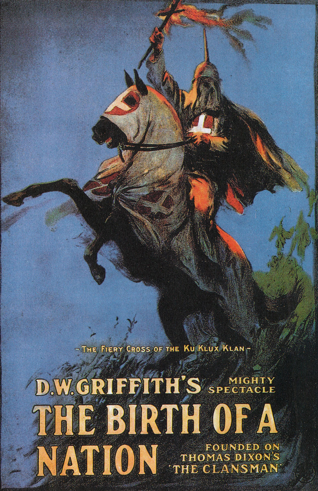

The United States of America was changed forever after WWI, considered a minor power in the global scale before WWI, The US would start its rise to superpower status following the war. The country stopped following its isolationist approach to European wars and got entangled in WWI. Overall America did boom in a post war society. Its industry was producing for both sides in the early war, and until the end for the Allies. This led to an economic boom in the USA where life was great for many. Social changes include the ability for women to vote in 1920, alongside the prohibition era where Alcohol was illegal from 1920 until 1933. America’s military did not suffer the casualties that many nations suffered and its homeland was scar free of battlegrounds allowing America to truly boom but it would bust due to the great depression, and would rise out of it due to various social changes. America was not perfect as it did suffer racial problems as its army did not draft African Americans, and the KKK grew rapidly in the south due to a feverous movie.
The United States of America would not join the League of Nations, the idea that Wilson put a lot of effort in creating. The reasons for this were many, first many Americans were still isolationist in ideals, and didn’t want to partake in global politics. The American government didn’t support the Treaty of Versailles, so the United States would keep out of European affairs until WWII.